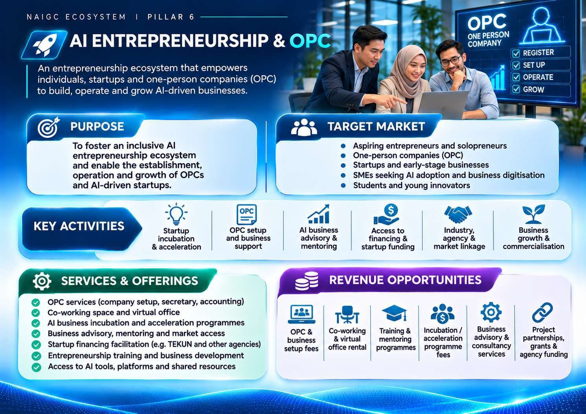

NAIGC
Malaysia AI Generation Centre
SYS//NODE.06 // ONLINE
←
HUB UTAMA
SYS//NODE.06 • STRATEGIC PILLAR 06
AI ENTREPRENEURSHIP & OPC
An entrepreneurship ecosystem that empowers individuals, startups and one-person companies (OPC) to build, operate and grow AI-driven businesses.
PURPOSE & OBJECTIVES
To foster an inclusive, high-velocity entrepreneurship ecosystem enabling solo founders, OPCs, and early-stage startups to launch and scale AI-native businesses.
TARGET MARKET
- Aspiring solo entrepreneurs, solopreneurs and indie hackers
- Registered One-Person Companies (OPC) seeking automation
- Early-stage tech startups requiring compute and market access
- Traditional small traders converting to digital/e-commerce models
- Young innovators, tertiary students and university spin-offs
KEY ACTIVITIES & OPERATIONS
Startup Incubation & Acceleration
Intensive cohort-based mentoring, product validation, and go-to-market scaling.
OPC Turnkey Infrastructure
Providing full incorporation, company secretary, legal templates and automated bookkeeping.
Seed Funding Facilitation
Connecting founders with venture funds, angel investors, TEKUN, and government grants.
Shared AI Compute & APIs
Subsidised access to enterprise GPU clusters, LLM tokens, and developer sandboxes.
Commercial Market Linkages
Pitch showcases bridging startup prototypes with corporate buyer procurement contracts.
SERVICES & OFFERINGS
- Complete One-Person Company (OPC) Setup, Secretarial & Accounting Packs
- AI-Powered Virtual Office & Flexible Co-Working Space Access
- Structured 12-Week AI Startup Incubation & Growth Programmes
- Commercialisation Advisory, Mentorship & Investor Pitch Preparation
- Assistance with Grant Applications (Cradle, MDEC, TEKUN Nasional)
- Shared Enterprise AI Tooling, APIs & Cloud Compute Subsidies
REVENUE & VALUE OPPORTUNITIES
OPC Setup & Corporate Services
Co-Working & Office Facilities
Incubation & Accelerator Fees
Venture Partnerships & Equity Grants
OFFICIAL NAIGC STRATEGIC ROADMAP • PILLAR 06
NATIONAL ARCHIVE • AUTHORISED DOCUMENT

SYS//CORE ONLINE • 8 ECOSYSTEM NODES OPERATIONAL • MALAYSIA AI GENERATION CENTRE